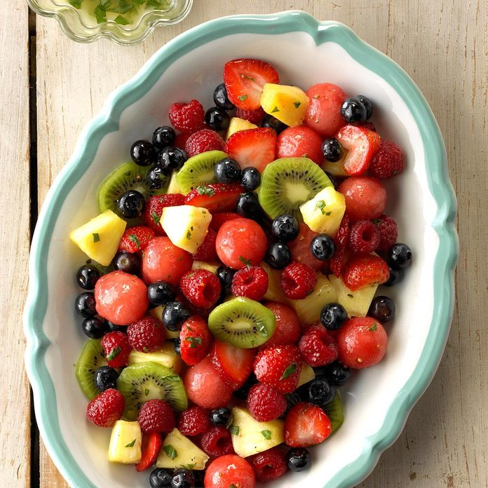

How To Be Mixed Fruit With Lemon-Basil Dressing

Ingredients
- 2 tablespoons lemon juice
- 1/2 teaspoon sugar
- 1/4 teaspoon salt
- 1/4 teaspoon ground mustard
- 1/8 teaspoon onion powder
- 6 tablespoons olive oil
- 4-1/2 teaspoons minced fresh basil
- 1 cup cubed fresh pineapple
- 1 cup sliced fresh strawberries
- 1 cup sliced peeled kiwifruit
- 1 cup seedless watermelon balls
- 1 cup fresh blueberries
- 1 cup fresh raspberries
Directions
- 1. Place the lemon juice, sugar, salt, mustard, onion powder and pepper in a blender; cover and pulse until blended. While processing, gradually add oil in a steady stream. Stir in basil.
- 2. In a large bowl, combine the fruit. Drizzle with dressing and toss to coat. Refrigerate until serving.
Nutrition Facts
- 3/4 cup: 145 calories, 11g fat (1g saturated fat), 0 cholesterol, 76mg sodium, 14g carbohydrate (9g sugars, 3g fiber), 1g protein. Diabetic exchanges: 2 fat, 1 fruit.